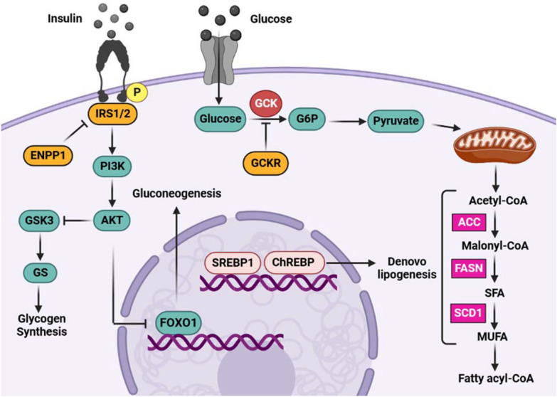

Background
This path describes the process of authoring a pathway model from a published pathway figure. In this case, we will use a pathway figure from the Pathway Figure OCR project. Pathway Figure OCR (PFOCR) is an open science project dedicated to extracting pathway information from the published literature. These instructions assume that you have everything you need to work with WikiPathways, including PathVisio and a WikiPathways account.
We will focus on the pathway figure below, describing Glucose-Insulin signaling, from a publication by Mahmoudi et al. The paper looks at genetic variation on non-alcoholic fatty liver disease, and the Glucose-Insulin signaling pathway is of interest because of a connection to this condition. To model this pathway, we will use the corresponding Pathway Figure OCR page as well as the publication itself, and other resources. The first step, described below, is to access the genes and chemicals extracted by PFOCR to jump-start the pathway drawing process.

Getting Started
- Launch PathVisio and set up identifier mapping for human.
- Start a new pathway by selecting File > New. Close the Pathway attributes interface, and then reopen it by double-clicking on the Pathway Information area at the top left.
- Enter a pathway title, for example "Glucose-insulin Signaling Pathway", and select "Homo saliens" as Organism.
- Navigate to the Pathway Figure OCR webpage.
- Scroll down to Gene mentions and click the curved arrow symbol and select Copy DataNodes for PathVisio.
- In PathVisio, select Edit > Paste to paste the nodes. This will produce a set of stacked data nodes, that are already annotated with external references.
- Repeat the process for the Chemical mentions on the PFOCR page. The metabolite nodes may end up in the same location as the gene product nodes; if so move the stack of nodes by click-and-drag while it is still selected.
- The information from PFOCR is not always accurate, meaning words in the figure may be matched incorrectly to gene and chemical annotations. Because of this, the data node annotation needs to be double-checked, and corrections made. In our case, some of the data nodes are false positives and should be deleted in PathVisio. Go ahead and delete the following nodes: MAP4K2, FAM20C, MAP4K5, GNAS, GNAL, BMS1, ACC (metabolite) and Glycogen.